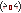
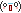

Code Quality / Best-Practice Guide
Many beginner coders have an absolute mess in their files. This is natural; after all, you have to do a lot of trial-and-error to get things to work. You're also probably not familiar with some best practices yet. This guide is here to help you, so that you may have a more organized and easier-to-understand code, which will make coding much easier for you!
Naming Conventions
Naming conventions are the industry standard on how to name our variables, class names, function names, and everything else. I highly recommend following these conventions; after all, there's a reason they're the standard! But even if you don't use the standard, stick to one per coding language, never mix!
By the way: Always code in English! This way other people can understand your code, too.
Here are some naming conventions, with an example each. You will mostly be using the first two, and perhaps the third one. The last two are here for your information, but you won't need them for web development.
my-variable("dash-case / kebab-case")
Usually used in HTML/CSS class names, IDs, etc.myVariable("camelCase")
Usually used in JavaScript (for both variables and function names)MY_VARIABLE("SCREAMING_SNAKE_CASE")
Usually used for constants in JavaScript (= variables of which the value never changes).MyVariable("PascalCase")
Used in other programming languagesmy_variable("snake_case")
Used in other programming languages
Good Examples:
.big-gallery(dash-case for CSS)let myAge = 25;(camelCase for JavaScript)const API_KEY = "12345";(that's okay for constants!)
Bad Examples:
.bigGallery(ew, that's disgusting!)
let my-age = 25;(wtf! does that even work?!)
const ApiKey = "12345";(what are you doing???)

BEM (Block-Element-Modifier) for CSS
BEM is a naming convention for CSS class names. It's absolutely not required to use this, but I want you to be aware of it at least. If nothing else, it might help you understand the class names of other people's projects.
In BEM (which stands for Block-Element-Modifier) there are three concepts:
- A Block is an element which might contain other elements, e.g. a gallery with many images.
- An Element is an element in a block, e.g. an image in a gallery.
- A Modifier is used to modify a block or element. For example, if one image in your gallery should be bigger than all others, you could give it the modifier "large". You probably won't need modifiers a lot.
The syntax is like this: .block__element--modifier. (Block and Element are separted by two underscores (__). The modifier is concatenated using two dashes (--).
So, in our gallery example, our class names / CSS selectors would be:
- The block:
.gallery - An element:
.gallery__item - A modifier:
.gallery__item--large
Keep in mind that modifiers are always additional, so in this case our large image would have both the element and the modifier classes: <div class="gallery__item gallery__item--large">
Keeping your Code Organized
Project Structure
File names should always be self-explanatory, e.g. header.css, comment-section.js. Once you have more than one file per type you should avoid using file names such as styling.css.
If you have multiple CSS files, they should all be in one folder (folder names e.g. style, css, ...).
If you have multiple JavaScript files, they should all be in one folder (folder names e.g. script, js, javascript, ...)
All your images should also be in a folder (folder names e.g. images, img, assets, ...).
You get the gist.
Avoid CSS in .html Files
This is inline CSS:
<div class="color: red; font-weight: bold;"> ...Try to avoid inline CSS as much as possible. If you use it a lot, your CSS code will end up being spread around all of your HTML files, instead of being kept neatly together in a stylesheet (CSS file).
Also avoid adding styles directly into an HTML page with <style> tags like this...:
<style>
div {
color: red;
font-weight: bold;
}
</style>... unless they really are for that page only!
In general, the more your CSS code is kept in one place (e.g. your CSS folder), the easier it will be to maintain (change) the code later.
Code Comments
You should use code comments genorously to label and describe sections of your code.
The rule is: Make code as self-explanatory as possible. If that's not enough to understand it, add a comment. This means comments aren't always necessary. For example, you could name a JavaScript function that generates a random number generateRandomNumber, which is self-explanatory, and therefore would not require a comment.
When in doubt, rather write too many comments than too few.
Here's how to write comments:
HTML:
<!-- This is a comment. -->
CSS:
/* This is a comment. */
JavaScript:
// This is a one-line comment.
/* This is a multi-line comment.
Awesome. */
Media Queries
For media queries (rules for responsiveness on smaller/larger screens) in CSS files there's two options to sort them.
One option is to keep the media queries of each element right next to the code for the element. Your code will then be organized like this: elementA, elementA-mobile, elementB, elementB-mobile, ...
I think the other option - moving all media queries to the end of the file - is neater. Your code will then be organized like this: elementA, elementB, ..., elementA-mobile, elementB-mobile, .... One benefit of this is that you need to write @media (max-width: ...) { only once (because it will contain the rules for all elements), and if you want to change the breakpoint you also only need to do it once.
You can decide for yourself which option you want to use, but make sure to stick to that decision so that you always know where a certain CSS rule is in your file.
As a beginner you will probably do a lot of trial-and-error (trying out different things until something works). That's okay, but make sure to always remove a non-working attempt before starting a next attempt. In general, always make sure to delete any code that you're not actually using. Though it technically doesn't "hurt" to have it, it will confuse you and make the file less readable.
In a perfect world, our code is perfectly organized once its written and we never need to clean anything up. But that's just not how the world works.
Therefore, you should regularly edit your code with the sole goal of organizing it, going through the points I've listed above.
It might seem like a lot of additional, unnecessary work, but it will save you a lot of time in the long run, I promise!
Version Control (Backups)
Version control is about keeping older version of your files just in case you make big mistakes and need to reset to an earlier state of your project.
The best way of doing this is by using git, but if you're an absolute beginner it can be confusing. I have a beginner tutorial on how to use it here, if you're interested.
Not up for it? Okay, then let's do the bare minimum: Every now and again, create a backup of your project. Add the date to the folder name so you always know which backup is from when.
How to create a backup: If your project is on your PC you can simply copy-paste the whole project folder. If you're using the Neocities editor, you can easily download your entire site as a zip file by going to "Edit Site", scrolling down all the way, and clicking "Download entire site".
I recommend keeping at least two backups of your site if you're an absolute beginner, just in case. You can delete any older backups.
Dry Kisses
There's two concept I want you to be familiar with. They're called DRY and KISS.
DRY stands for: Don't repeat yourself.
It's about abstraction. Abstraction is making code more general and so that you can use it multiple times for multiple things.
Imagine you have two pages with an image gallery on your website. One is for your cats, with small images, and the other is for your art, with larger images. Except for the image sizes, the styling for the two gallery elements are the same. Instead of copy-pasting one gallery code and changing the class name and image size, DRY tells us to re-use the gallery code and only overwrite (e.g. by using an additional class name) what we really need to change (the image size). The result is less code, which is easier to maintain. Whenever you want to change the styling of the gallery you will only have to do it once, not twice. Now imagine you have 10 galleries on your website! Lots of work saved!
.gallery {
/* gallery styling... */
}
.gallery.cat-gallery img {
width: 50px;
}
.gallery.art-gallery img {
width: 100px;
}KISS stands for: Keep it simple, stupid!
If there's a simple way of doing something, do that. This also means sometimes breaking the DRY rule.
Just use your common sense to decide what to do. * blows you a kiss *
I spend many hours of my free time creating tutorials like these that I publish for free. If you'd like to say thanks, consider buying me a coffee!
Last autumn I took in a stray cat that gave birth to 5 kittens in my apartment. As an unemployed uni student, the expenses (over 1600€, mostly vet bills) were rough for me. I appreciate any help, no matter how small!
If you donate 10€ or more you'll be featured on my site!

.jpg)